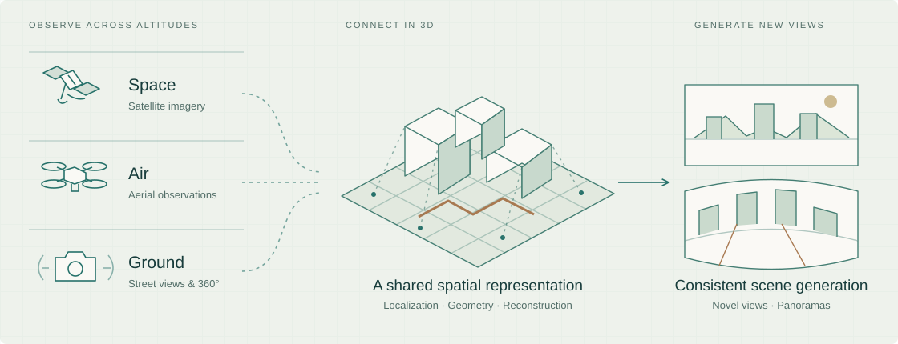
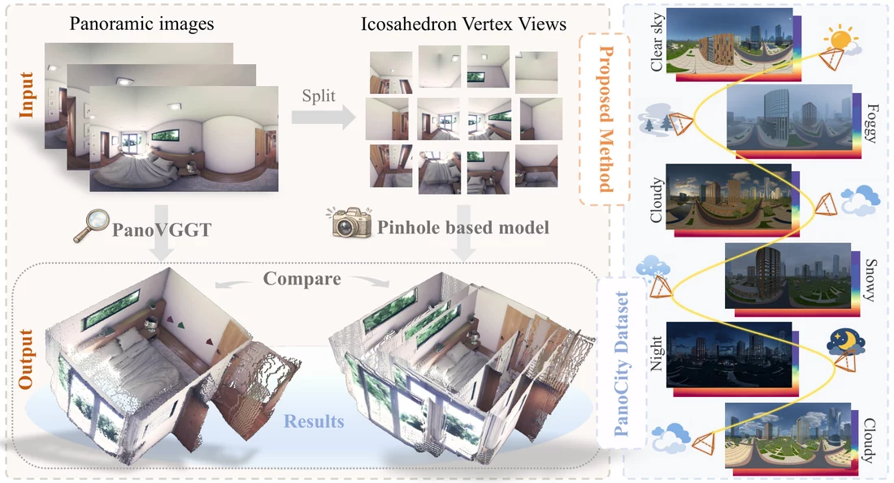
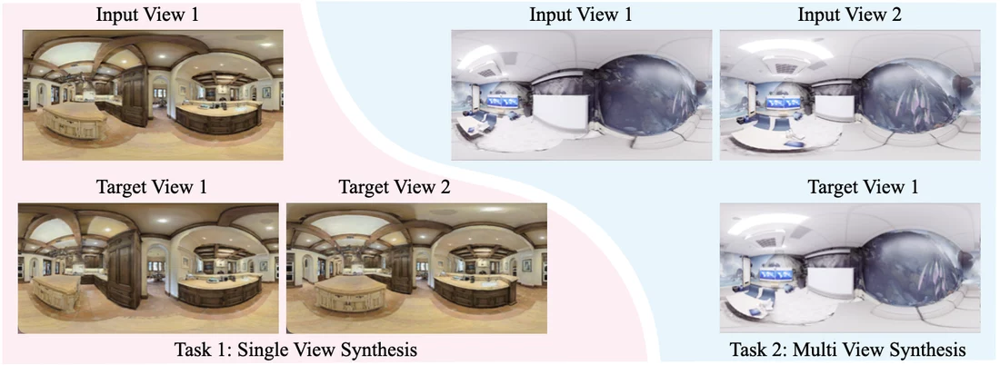
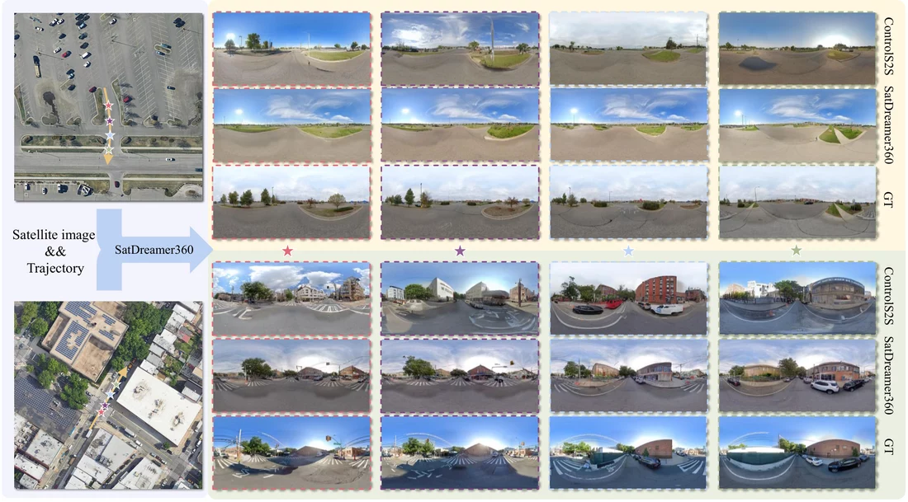
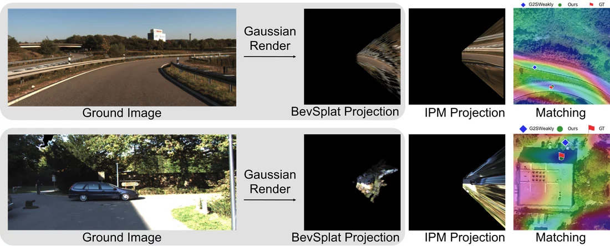
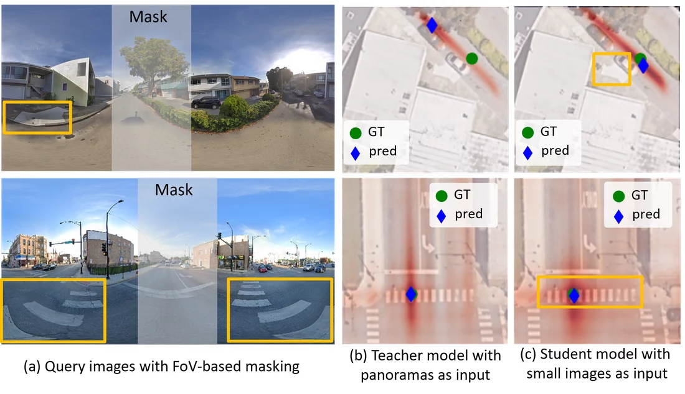

3D vision across altitudes
Connecting satellite, drone, and ground imagery for camera localization and joint 3D reconstruction, with an emphasis on geometric consistency and learning with limited supervision.
Spatial AI Lab · ShanghaiTech University
Assistant Professor
3D vision across altitudes.
World models from aerial perspectives.
My research connects satellite, aerial, and ground observations to understand and model large-scale environments in 3D. I work on cross-view localization, 3D reconstruction, panoramic vision, and scene generation.
Research vision
Connecting views across heights and scales to build a coherent understanding of the world.

Connecting satellite, drone, and ground imagery for camera localization and joint 3D reconstruction, with an emphasis on geometric consistency and learning with limited supervision.
Learning geometry and scene representations from 360° imagery for pose estimation, feed-forward reconstruction, and novel view synthesis.
Bringing geometry and generative modeling together to synthesize consistent ground-level views from satellite imagery and model scenes across viewpoints.
My earlier research established a focus on ground-to-satellite camera localization, progressing from city-scale retrieval to fine-grained pose estimation, and from fully supervised learning to weak supervision. Alongside localization, I have explored satellite-to-ground image synthesis, linking geometric reasoning with visual generation.
Featured research
Cross-altitude 3D
Connecting satellite, drone, and ground images through joint 3D reconstruction and camera pose estimation.
NeurIPS · 2026

Panoramic 3D
Predicting camera poses, depth, and 3D structure directly from panoramic imagery.
CVPR · 2026

Scene representation
Representing panoramic scenes with cylindrical triplanes and Gaussian splatting for novel view synthesis.
ICLR · 2026

Cross-view generation
Generating consistent ground-level panoramas from satellite imagery and a camera trajectory.
ICLR · 2026

Cross-view localization
Using feature-based Gaussian primitives to resolve height ambiguity in weakly supervised cross-view localization.
NeurIPS · 2025 · Spotlight

Learning with less supervision
Learning cross-view localization from coarse supervision through geometry-guided self-distillation.
ICCV · 2025
Spatial AI Lab · Opportunities
I welcome motivated students and researchers who want to connect geometry, learning, and generation to understand the world across viewpoints.
Undergraduate and master's students, research assistants, visiting students, and postdoctoral researchers are welcome to reach out with a CV and a brief description of their research interests.
Get in touchFrom the lab
Community